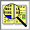

Mordor was built to be as realistic as possible. With this in mind, characters can interact with other characters, pick up and resurrect dead characters, cast spells and exchange items, and even wander around the dungeon with each other. This is what makes the game really enjoyable. In order to interact with another character, they must be in the same room (or in the city), or in the same party. Wherever the selected character was last run (before exiting the game) will be the place they will stay until run again.
Another feature that separatesM1 from most CRPG (Computer role-playing Games), is that a player need not "save" the game or character since it operates in real-time and the "saving" is all done automatically without the player even realizing it. If your character dies, there is no way to go back and "load" the character before they died. The game just doesn't work that way. So, when an event happens, it's permanent. This definitely makes the game more challenging. It's also nice when a player's machine accidentally "shuts down" - to load the game back up and find your character exactly the way they were before the accidental shutdown.
Game Interface
The Windows inM1 have been created to be similar to each other in use and look. To add flexibility to the game interface, Character Windows ( e.g. Stats, Items, Companions), can be resized. When a Character Window is resized, the font within the window will resize accordingly to fit the new size of the window. To reset a window to it's base size, use the Control Panel. A player also has the option of setting which fonts they wish to use for the game from the Option section of the Main Menu.
Areas where a user can type in information or Drag and Drop an object ( e.g. Item, Spell), are shaded in a light-tan color.
Pausing the Game
Anytime the Main game Window is minimized, the game will be paused. It does not matter if one is in combat or lying poisoned in the dungeon. Absolutely no game events will take place during the time that the window is minimized.
Move to the next section to read about the Main Menu.
Move to the previous section to read the History of Mordor.
M1: "The Depths of Dejenol" is a Trademark of Decklin's Domain Ltd and is © Copyright 1994-2026 All Rights Reserved